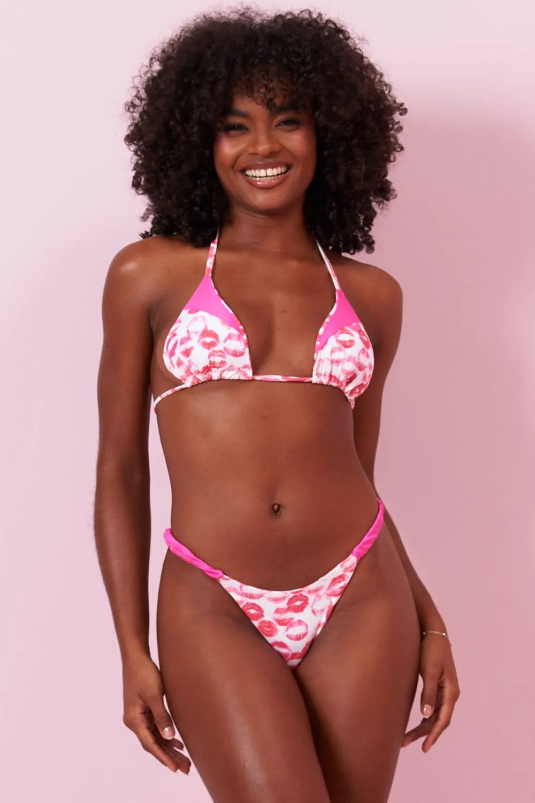

Fortaleza · CE — Disponível para experiências selecionadas
Companhia de luxo & videochamadas exclusivas.
o calor antes do fogo
02 Aproximação · próxima fase
03 Tensão · próxima fase
04 Falar comigo · próxima fase